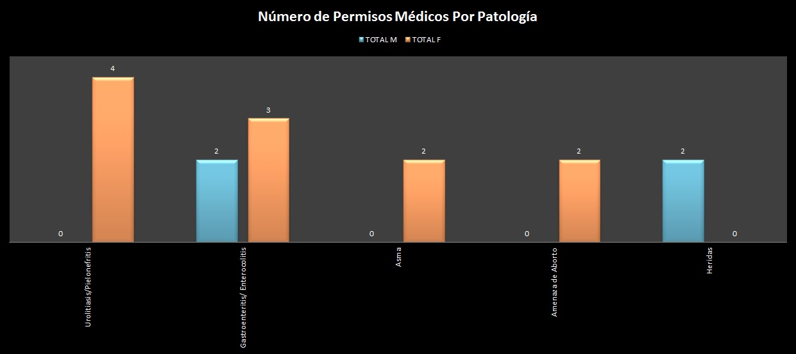
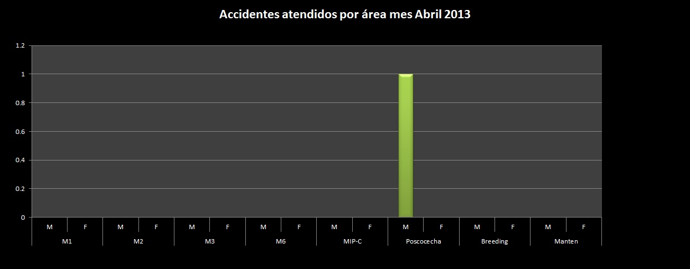

Indicadores de Salud Ocupacional UN La Mora

Ausentismo por Certificados Emitidos desde Dpto. Médico La Mora
En el Dpto. Médico se emitieron en el mes de Abril 15 permisos de ausentismo por reposo médico, de los cuales 11 fueron dirigidos a pacientes femeninas con enfermedades que afectan a las vías urinarias y gastrointestinales, en menor frecuencia los permisos se dirigieron a hombres con diagnóstio de heridas en general.
Accidentes Laborales
En el mes de abril, se registró y reportó un accidente laboral, el cual luego del tratamiento recibido presenta una remisión absoluta de su sintomatología, sin presentar ninguna secuela.
